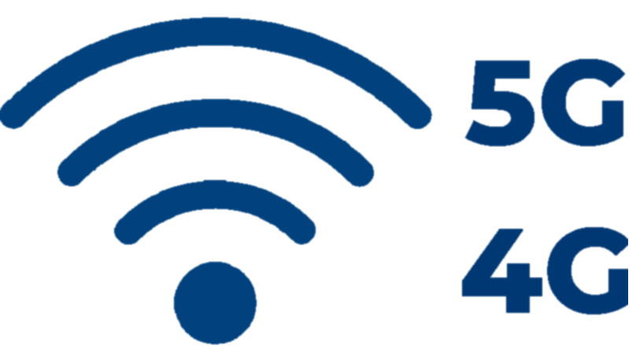
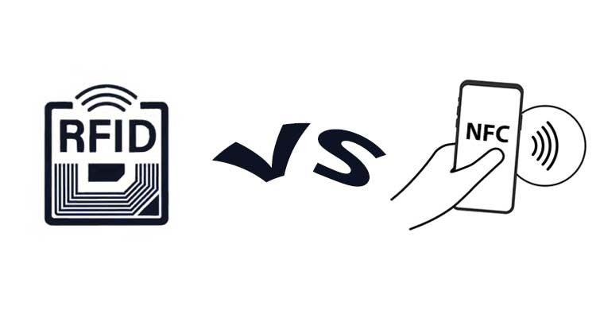
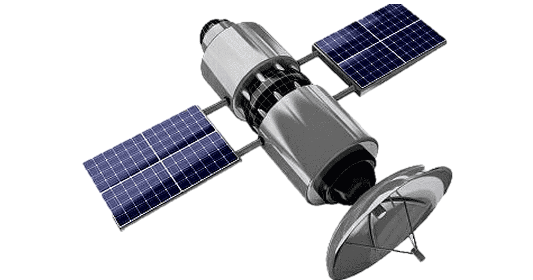

Impacto Ambiental y Sostenibilidad de las Tecnologías Inalámbricas
Las tecnologías inalámbricas han transformado nuestra sociedad, pero también tienen efectos en el medio ambiente. En este sitio exploraremos su impacto, la sostenibilidad de su uso y las soluciones para minimizar su huella ecológica.
-
¿Qué son la tecnologías inalámbricas?
Las tecnologías inalámbricas han revolucionado la forma en que nos comunicamos, accedemos a la información y utilizamos dispositivos electrónico; son aquellas que permiten la transmisión de datos sin necesidad de cables físicos. Utilizan ondas electromagnéticas, como radiofrecuencia, infrarrojos o microondas, para enviar información entre dispositivos.
-
Ejemplos de tecnologías inalámbricas
WI-FI
Permite la conexión de dispositivos a una red local sin cables, facilitando el acceso a internet en hogares, oficinas y espacios públicos.BLUETOOTH
Tecnología de corto alcance para la transmisión de datos entre dispositivos como auriculares, relojes inteligentes y altavoces.4G/5G:

Utilizadas por los teléfonos celulares para la transmisión de voz y datos a través de torres de telecomunicaciones.RFID/NFC:

Usado para metodos/dispositovps de identificación y pagos sin contacto.SÁTELITES GPS:

Permiten la transmisión de datos a nivel global, esenciales para sistemas GPS y telecomunicaciones en zonas remotas. -
Ventajas de las tecnologías inalámbricas
- Eliminan la necesidad de cables, reduciendo costos y facilitando la instalación.
- Mayor movilidad y comodidad para los usuarios.
- Conectividad en áreas remotas o de difícil acceso.
- Posibilidad de conectar múltiples dispositivos simultáneamente.
-
Desafíos y desventajas
- Pueden ser más vulnerables a interferencias y hackeos.
- Dependencia de la cobertura de señal y calidad de transmisión.
- Algunas tecnologías consumen más energía, afectando la duración de la batería en dispositivos móviles.